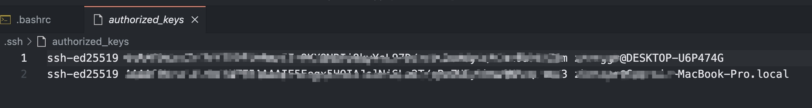
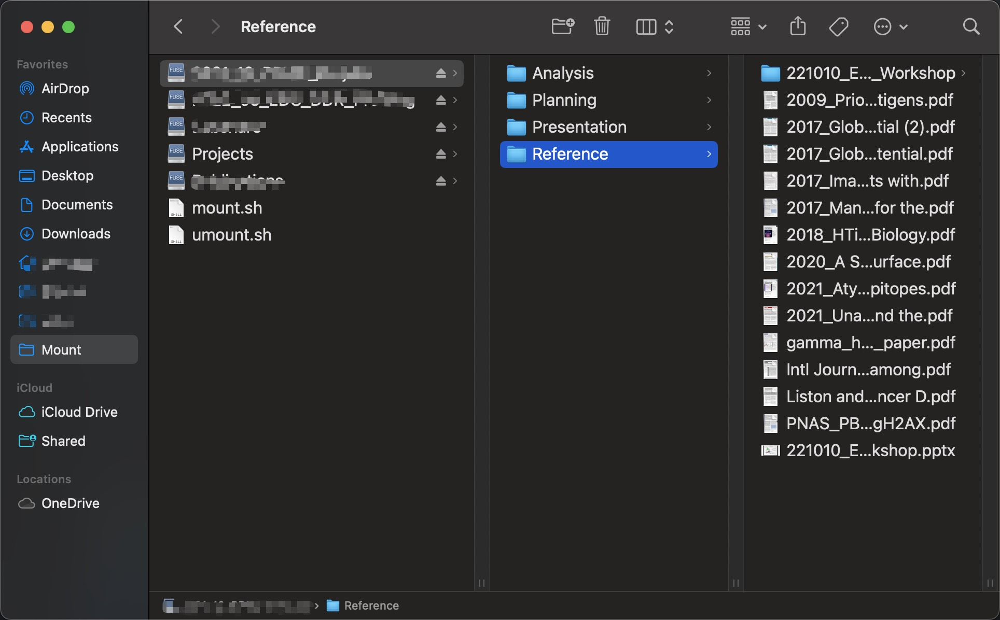

![]()
Setup SSH Remote Keys
Login to server without using password with SSH remote key
- Add the host into the hosts folder
- Mac:
code /etc/hosts - Windows:
C:\Windows\System32\drivers\etc\hosts
### On the local machine:
172.20.***.** nucleus.ccpa nucleus
172.20.***.** lipid-droplets.ccpa lipid-droplets- Generate public key
### Windows
local> cd ~/.ssh
local> ssh-keygen -t ed25519
local> ls
local> more id_ed25519.pub ### Mac
local> cd ~/.ssh
local> ssh-keygen -t ed25519
local> ls
local> cat id_ed25519.pub - Add the public key to remote server
### On the remote server
remote> cd ~/.ssh
remote> chown -R chase:users .ssh
remote> chmod 700 .ssh
remote> scp username@local://home/user/.ssh/id_ed25519.pub .ssh/authorized_keys
remote> chmod 644 .ssh/authorized_keys### Or on local machine
### Windows
# local> scp id_ed25519.pub remote:/home/user/.ssh/authorized_keys
### Mac
### Also copy the key to authorized_keys in the remote sever
local> cat id_ed25519.pub
Adding colors to Bash scripts
In the remote server, add the following script to the ~/.bashrc
PS1='\[\033[1;36m\]\u\[\033[1;37m\] @\[\033[1;32m\] \h:\[\033[1;33m\] \w\[\033[0;97m [\t]\[\033[0;97m \n\[\033[1;35m\]\$\[\033[0m\] 'Supercharge Terminal
### Install [Home-brew](https://brew.sh/)
/bin/bash -c "$(curl -fsSL https://raw.githubusercontent.com/Homebrew/install/HEAD/install.sh)"
### Change default shell from bash to zsh
chsh -s $(which zsh)
### Install oh-my-zsh in the terminal
sh -c "$(curl -fsSL https://raw.githubusercontent.com/ohmyzsh/ohmyzsh/master/tools/install.sh)"
### change default theme to ys
open ~/.zshrc
ZSH_THEME="ys"
### install oh-my-zsh plugins
git clone https://github.com/zsh-users/zsh-syntax-highlighting.git ${ZSH_CUSTOM:-~/.oh-my-zsh/custom}/plugins/zsh-syntax-highlighting
git clone https://github.com/zsh-users/zsh-autosuggestions ${ZSH_CUSTOM:-~/.oh-my-zsh/custom}/plugins/zsh-autosuggestions
### make oh-my-zsh plugins working
open ~/.zshrc
plugins=(
git
zsh-autosuggestions
zsh-syntax-highlighting
colored-man-pages
colorize
)
### Make it working
source ~/.zshrcMount a remote files

Install
macFUSEandSSHFS: https://osxfuse.github.io/Create mount directory in local
$ mkdir ~/mount/mountpoint- Mount directory
sshfs «user»@«host»: «mountpoint»- Un-mounting the remote volume
$ umount ~/mount/mountpoint
VScode SSH using Keys
open .ssh/config, add the following
Host nucleus
HostName 172.20.***.** ## host ip address
User usr_name
IdentityFile "Users/usr_name/.ssh/id_******" ### private keyUsing R in VSCode
The details refer to: https://github.com/REditorSupport/vscode-R

- Install r packages
install.packages("languageserver")
install.packages("httpgd")
install.packages("IRkernel")
install.packages("rmarkdown")
install.packages("jsonlite")### A modern R console from python
pip install -U radian- Intall VSCode extensions
- vscode-R
- R Debugger
- Error lens
- Live Preview
- vscode-pdf
- Remote Development
- LiveShare
- Settings and keyboard shortcut
- Add to User
settings.json:
{
"files.associations": {
"*.Rmd": "rmd"
},
"security.workspace.trust.untrustedFiles": "open",
"editor.fontSize": 14,
"explorer.confirmDelete": false,
// "r.rterm.mac": "/opt/homebrew/bin/radian",
"r.rterm.mac": "/opt/homebrew/Caskroom/miniforge/base/bin/radian",
"r.rpath.mac": "/usr/local/bin/R",
// "r.rpath.mac": "/opt/homebrew/Caskroom/miniforge/base/bin/R",
// "r.rterm.windows": "C:\\Program Files\\R\\R-4.2.1\\bin\\R.exe",
"r.rterm.windows": "C:\\Users\\zhonggr\\AppData\\Local\\Programs\\Python\\Python310\\Scripts\\radian.exe",
"r.rpath.windows": "C:\\Program Files\\R\\R-4.2.1\\bin\\R.exe",
"r.plot.useHttpgd": true,
"r.rterm.option": [],
"r.bracketedPaste": true,
"r.alwaysUseActiveTerminal": true,
"r.sessionWatcher": true,
"quarto.mathjax.theme": "dark",
"quarto.render.previewType": "external",
// "terminal.integrated.fontSize": 15,
// "terminal.integrated.defaultProfile.windows": "Git Bash",
"terminal.integrated.defaultProfile.windows": "R Terminal",
// "terminal.integrated.defaultProfile.osx": "R Terminal",
"terminal.integrated.defaultProfile.osx": "zsh",
"terminal.integrated.enableMultiLinePasteWarning": false,
"workbench.iconTheme": "vscode-icons",
"r.helpPanel.cacheIndexFiles": "Global",
"workbench.preferredDarkColorTheme": "Monokai",
"workbench.preferredHighContrastColorTheme": "GitHub Dark Default",
"r.rmarkdown.chunkBackgroundColor": "",
"workbench.colorTheme": "GitHub Dark",
"liveServer.settings.donotShowInfoMsg": true,
"workbench.tree.indent": 25,
"python.analysis.completeFunctionParens": true,
"editor.minimap.enabled": false,
"explorer.confirmDragAndDrop": false,
"window.zoomLevel": 1,
"window.restoreWindows": "none",
"remote.SSH.remotePlatform": {
"nucleus": "linux"
},
"editor.guides.bracketPairs": true,
"workbench.colorCustomizations": {
"editorBracketHighlight.foreground1": "#5bb3b3",
"editorBracketHighlight.foreground2": "#fac863",
"editorBracketHighlight.foreground3": "#f99157",
"editorBracketHighlight.foreground4": "#ec5f67",
"editorBracketHighlight.foreground5": "#bb80b3",
"editorBracketHighlight.foreground6": "#98C379",
},
"editor.guides.highlightActiveBracketPair": false,
"editor.parameterHints.enabled": false,
"task.quickOpen.history": 5,
"terminal.integrated.tabs.enableAnimation": false,
"terminal.integrated.tabs.enabled": false,
"Lua.workspace.supportScheme": [
"file",
"default"
],
"terminal.integrated.fontSize": 14
}- Add to
keybindings.json:
[
{
"key": "alt+-",
"command": "type",
// "when": "editorLangId == r && editorTextFocus || editorLangId == rmd && editorTextFocus",
// if you want using quarto, try this
"when": "editorLangId =~ /r|rmd|qmd/ && editorTextFocus",
"args": {"text": " <- "}
},
{
"key": "ctrl+shift+m",
"command": "type",
// "when": "editorLangId == r && editorTextFocus || editorLangId == rmd && editorTextFocus",
"when": "editorLangId =~ /r|rmd|qmd/ && editorTextFocus",
"args": {"text": " %>% "}
},
{
"key": "ctrl+shift+m",
"command": "-workbench.actions.view.problems"
},
// input indicative of r markdown code chunk
{
"key": "ctrl+shift+i",
"command": "editor.action.insertSnippet",
"when": "editorTextFocus && editorLangId == 'rmd'",
"args": {
"snippet": "```{r}\n${TM_SELECTED_TEXT}$0\n```"
},
"label": "input indicative of r markdown code chunk"
},
// you can also input indicative of code chunk in `r` file by inserting "# %% ":
// specifics in `https://github.com/REditorSupport/vscode-R/pull/662`
{
"key": "ctrl+shift+i",
"command": "editor.action.insertSnippet",
"when": "editorTextFocus && editorLangId == 'r'",
"args": {
"snippet": "$LINE_COMMENT %% "
},
"label": "input indicative of code chunk"
},
// open help panel for selection
{
"key": "f1",
"command": "r.helpPanel.openForSelection",
"when": "editorTextFocus && editorLangId == 'r' || editorTextFocus && editorLangId == 'rmd'"
},
// RStudio keybinding for R Package development
// {
// "key": "ctrl+shift+b",
// "command": "r.install",
// "when": "resourceLangId == 'r'"
// },
// {
// "key": "ctrl+shift+e",
// "command": "r.check",
// "when": "resourceLangId == 'r'"
// },
// {
// "key": "ctrl+shift+t",
// "command": "r.test",
// "when": "resourceLangId == 'r'"
// },
// {
// "key": "ctrl+shift+d",
// "command": "r.document",
// "when": "resourceLangId == 'r'"
// },
// {
// "key": "ctrl+shift+l",
// "command": "r.loadAll",
// "when": "resourceLangId == 'r'"
// },
// {
// "key": "ctrl+alt+p",
// "command": "r.runCommand",
// "when": "editorTextFocus && editorLangId == 'r'",
// "args": ".vsc.browser(httpgd::hgd_url(), viewer = \"Beside\")"
// },
{
"key": "tab",
"command": "-acceptSelectedSuggestion",
"when": "suggestWidgetHasFocusedSuggestion && suggestWidgetVisible && textInputFocus"
}
]settings.jsonfor Remote [SSH:nucleus]
{
"r.rterm.linux": "/home/zhonggr/.local/bin/radian",
// "r.rterm.linux": "/bin/R",
"r.rpath.linux": "/bin/R",
"r.alwaysUseActiveTerminal": true,
"r.bracketedPaste": true,
"r.sessionWatcher": true,
// "terminal.integrated.defaultProfile.linux": "R Terminal",
// "terminal.integrated.defaultProfile.linux": "tmux",
"terminal.integrated.defaultProfile.linux": "bash",
"r.plot.useHttpgd": true
}